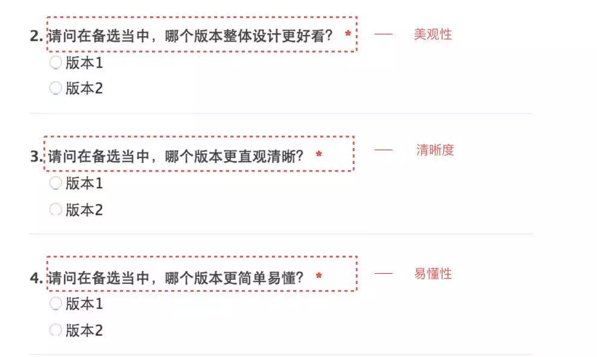

我们在做什么？
「小D, 你觉得这个操作效率会高于之前的状态么?」
「小D, 我们的用户群体有没有变化?」
「小D, 这个版本可用性问题有哪些?」
「诶, 那个…」
这些都是用研同学在工作中经常会被追问的问题, 诸如用户到底是哪些群体, 用户对于产品的整体满意度是怎样的, 在新改版之后用户是否能够顺利完成操作任务, 甚至设计希望知道用户在每一个界面上的操作时间和流失情况等. 事实上, 用户研究的工作之一就是要通过对于数据的监测和理解, 了解用户的基本属性信息, 分析使用产品时的态度和行为特征, 结果「特定」的分析来帮助需求部门作出合理的决策.
用户体验的数据指标
不同组织架构下的用研部门关注的数据指标之间存在一定的差异, 同时也会因为需求方的需求不同择取不同的数据作为监测指标. 下图是我根据 UED 部门中用研的常规需求罗列了一些可能会遇到的指标.
对于一个相对成熟的产品或者服务而言, 每一次迭代之后用户的行为数据和态度数据将会成为评价这一次优化是否达成预期的标准, 当然也成为后续调整的依据.
广义的来讲, 用户体验的数据指标大致可以分为三类:
A. 可用类指标
这是在设计过程中最为常用的一类指标, 聚焦于用户在使用产品中的行为, 告诉我们用户在使用中发生了什么. 主要包括: 严重程度、可克服度、任务成功率、完成任务的时间、线索识别等.
B. 参与类指标
这类指标聚焦于用户在使用过程中的状态是怎样的, 主要包括: 注意时长、愉悦指数、心流体验、总浏览时长、第一印象等.
C. 转化类指标
转化类指标是各个部门同学都关注的指标, 值得说明的是, 这一类指标并不单纯是指转化率. 它还包括我们之前提到过的 NPS, 品牌属性等, 主要聚焦于用户在使用后的态度, 比如他们做了什么或者期望做什么.
当然, 我们在实践操作的过程中, 可以根据研究的目的和需求, 从上述指标中选择某一个或者某几个数据指标合并成一个综合分数进行监测. 下面就是 Google 团队定义的「HEART」框架:
Happiness(愉悦度): 反映用户使用态度, 包括用户满意度、净推荐值等.
Engagement(参与度): 主要是指用户参与程度，即一段时间内用户的访问频率、强度等.
Adoption(接受度): 特定时期内有多少新用户开始使用产品.
Retention(留存率): 再次访问网站的用户占比程度.
Task success(任务完成度)
数据指标要注意什么
数据指标在很多时候并不是绝对的，我们在实践中需要注意:
指标需要分场景和页面进行分析
以页面停留时间为例, 我们不能简单地把这个指标对应为「参与度」. 如果在主要流程界面上, 过长的停留时间可能是意味着用户在这个界面因困惑而花费了大量的时间进行摸索尝试.
指标更多的只是为设计提供参考
我们的大多指标反映的其实是「相关关系」而非「因果关系」. 以新功能上线后流量增长为例, 这个时候设计团队可能认为这与他们的新设计方案有关, 产品团队可能会认为是新功能发布带来的, 而运营同学也会认为是同期的活动影响的. 这个时候的流量数据可能就不能成为设计趋势的支撑, 反而进一步做一些定性分析会更为适合.
数据指标不是万能的
我们的数据监测通常是在产品发布后进行, 但是当有一个新的灵感出现, 希望能够找到度量指标提供设计参考的时候会尴尬的发现很多脑洞是没有预先做监测的. 再如我们常用的 A/B 测试, 确实 A/B 两版设计的点击量可以帮助设计师判断如何进行界面布局, 但也往往止步于此, 很难对更多的设计做出决策参考.
针对这样的问题, 同样建议与定性分析或者针对确切人群进行问卷调研, 以 A/B 测试后期研究为例. 可以测试目的进行细节维度的拆分, 一般以 3-5 个维度最佳(如下图).

用户体验度量的最终目标并不在于度量本身, 数据指标只不过是研究的一种途径或者方法. 在实践中更多的是需要用研同学根据需求, 定性定量相互结合进行分析.
本文最初发布于「用户研究社」(Wechat: UXD-JointLab), 我爱这个团队.